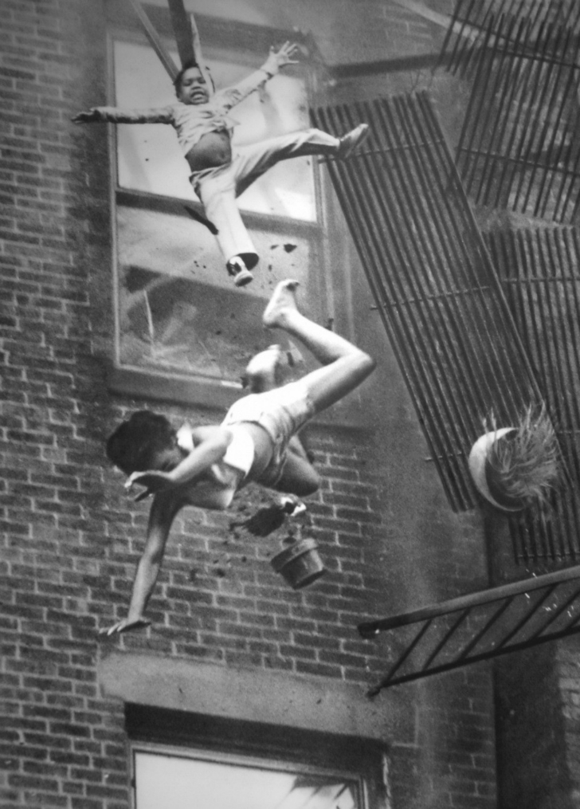

22 Temmuz 1975 tarihinde ABD Boston’da Stanley J. Forman isimli gazeteci, polis radyosunu dinlerken şunu duydu: Marlborough Caddesi’nde yangın. Hemen olay yerine gitti. Resimdeki Diana Bryant ve küçük kız Tiare Jones, itfaiyecilerden yardım bekliyorlardı. Forman’da elindeki makineyle olayı takip ederken, Bob O’Neil adlı itfaiyeci de yangın merdivenine kadar ulaşmış, kamyondan gelecek merdiveni bekliyordu. Fakat merdivenin çok da yaklaştığı sırada içerdeki alevler arttı ve yangın merdiveni daha fazla dayanmadı. Bu esnada Forman bu kareyi çekti. Diana Bryant yere düşer düşmez hayatını kaybetti. Küçük kız ise yaşadı. O’Neil ise kahramanca bir efor sergilemesine rağmen, iki hayatı da birden kurtarmasına ramak kaldığı için çok üzüldüğünü söyledi. Fire Escape Collapse adlı bu fotoğraf ise Stanley J. Forman’a Pulitzer Ödülü kazandırdı. Bu fotoğraf yıllarca güvenlik kampanyalarında kullanıldı..
